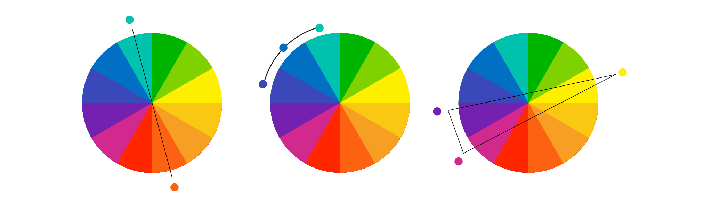

Гармоничная цветовая схема делает плакат целостным и профессиональным. Использование одних и тех же цветов для связанных элементов, например заголовков и подзаголовков, помогает структурировать материал. радужных схем и разноцветных блоков. Выберите один цвет для каждого типа информации (например, синий для заголовков, зелёный для графиков). Если графики, которые вы смоделировали в сторонней программе уже имеют определенную цветовую палитру, можете подстроиться под нее.
Использование высококонтрастных сочетаний может решить задчу. Цвета должны отличаться не только оттенками, но и яркостью. Например, вместо красного и зелёного можно использовать сочетания синих и оранжевых оттенков. Можно добавить варианты альтернативных методов передачи информации: Вместо исключительно цветовой кодировки можно использовать текстовые подписи, разные формы или текстуры, чтобы передать различия. Например, линии на графиках можно различать не только цветом, но и типом: сплошные, пунктирные, штриховые. Современные инструменты, такие как Coblis (Color Blindness Simulator) позволяют проверить, как выглядит цветовая схема для людей с различными нарушениями зрения. Избегайте спорных сочетаний: Красный и зелёный, зелёный и коричневый, синий и фиолетовый часто проблемны для дальтоников. Вместо этого выбирайте контрастные пары, такие как синий и жёлтый. Создание научных плакатов, доступных для людей с нарушениями зрения, демонстрирует уважение к аудитории и стремление к инклюзии. Это улучшает репутацию автора и позволяет донести идеи до большего количества людей. Учёт нарушений цветового зрения делает плакат более доступным для широкой аудитории, что усиливает его научную и социальную ценность.
Грамотно подобранная цветовая схема делает плакат визуально привлекательным и удобным для восприятия всеми зрителями, включая тех, кто видит цвета иначе. Используйте ограниченное количество цветов (3–5), чтобы избежать излишней пестроты. Цвета должны дополнять друг друга, создавая визуально приятное восприятие. Например, можно использовать классическую триаду (цвета, расположенные на равном расстоянии на цветовом круге) или аналоговые цвета (соседние на цветовом круге). Выбирайте комбинации цветов с достаточным контрастом, чтобы текст и графики были читаемыми, особенно для мелкого текста. Цвета помогают разделять разделы, выделять важные элементы (заголовки, ключевые данные) и направлять взгляд зрителя. Выбирайте комбинации цветов с достаточным контрастом, чтобы текст и графики были читаемыми, особенно для мелкого текста. Один и тот же цвет должен означать одну и ту же функцию на протяжении всего плаката. Например, если вы используете зелёный для выводов, он должен быть применён ко всем выводам.
Наиболее распространённые формы дальтонизма связаны с красным и зелёным (дейтеранопия и протанопия). Поэтому избегайте их использования в одной палитре. Вместо этого используйте безопасные сочетания, такие как: — Синий и оранжевый. — Голубой и тёмно-розовый. — Чёрный и жёлтый.
В случае недостаточного контраста используйте текстурированные подложки или узоры (например, пунктир или диагональные линии) для выделения областей. Это особенно полезно для графиков.